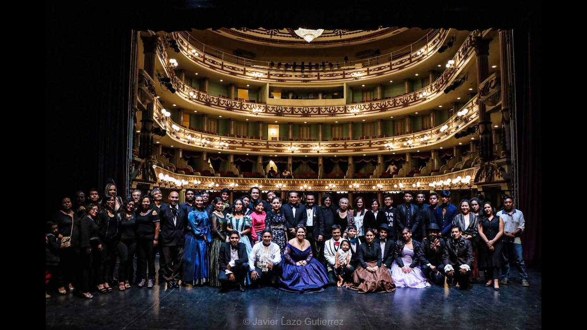

CUAUHPANCO TEATRO
“Hay muchas maneras de hacer teatro, nosotros lo hacemos en comunidad desde 1995 como un festejo, como un juego, como un homenaje a la vida. Lo hacemos con pasión y disciplina, convencidos de haber encontrado en su praxis una excelente herramienta para el desarrollo humano”.
“Cuauhpanco Teatro es una agrupación independiente que ha consolidado su trabajo creativo en un amplio repertorio, lo cual contribuye a la importante labor de formación de públicos. Se caracteriza por gestar múltiples proyectos artísticos, difundiendo y promoviendo el arte teatral como una herramienta de desarrollo humano. Tiene la cualidad de diversificar la temática de montajes, el género y el estilo de los mismos, con el objetivo de acercarse a diferentes audiencias. Quienes integran actualmente a Cuauhpanco tienen el interés de dar a conocer el teatro en Oaxaca y promover la profesionalización de sus integrantes. Ha producido más de 100 montajes desde su fundación. Sus propuestas han estado presentes en las ocho regiones del estado de Oaxaca. Ha llevado sus montajes a otros estados del País y ha compartido el teatro oaxaqueño en festivales y muestras de carácter internacional”.
¡30 años de teatro!
Para 2025, Cuauhpanco Teatro celebra su trigésimo aniversario en los escenarios, un hito que marca tres décadas de pasión, disciplina y dedicación al arte teatral. Para festejar esta experiencia, se ha preparado una serie de actividades especiales que invitan al público a ser parte de esta celebración.
Los festejos arrancaron en febrero con la edición especial de "Siete Maneras de Amar", que revivió escenas icónicas de distintas ediciones pasadas, ofreciendo un recorrido por los momentos más memorables del grupo. En abril, el reestreno de "Historias que trajo el mar" deleitó a las audiencias en tres foros independientes y en Puerto Escondido.
El punto culminante de la celebración será el estreno de un nuevo y emocionante proyecto que integra a talentos emergentes, un guiño al futuro de Cuauhpanco Teatro. ¡Pronto revelaremos más detalles sobre esta gran sorpresa!